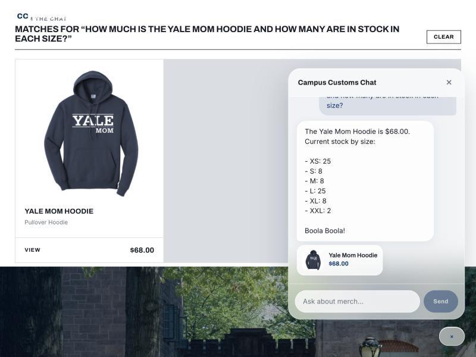
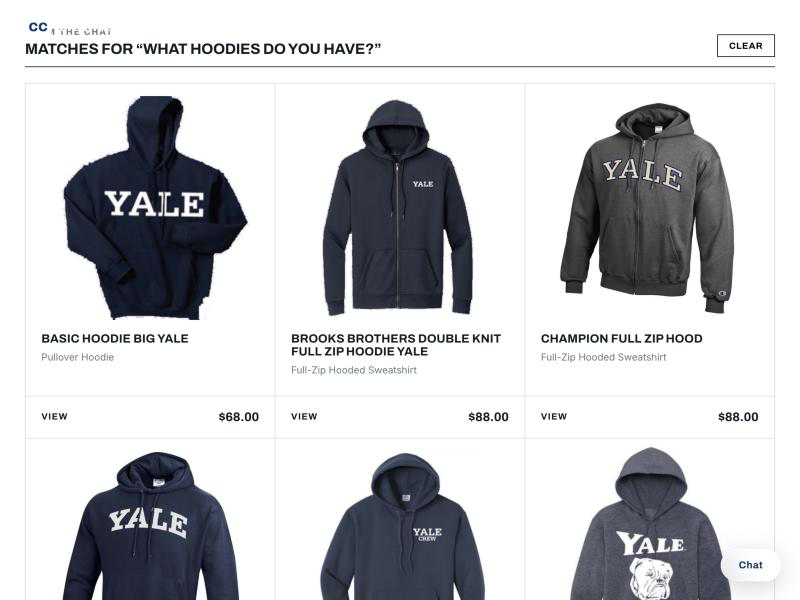
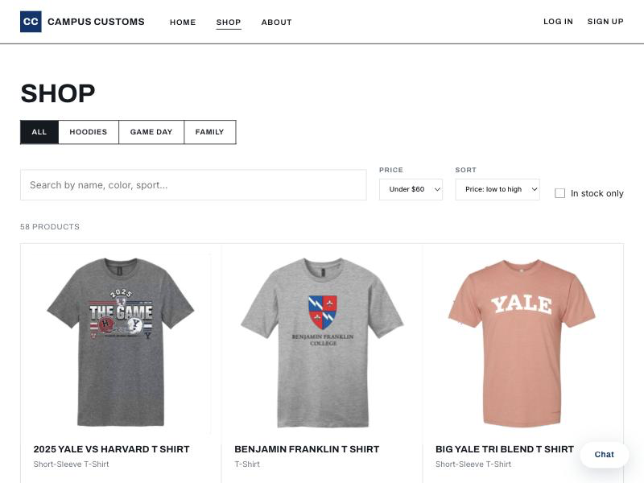

Check 1 · Chat inventory
The chatbot reports honest price and stock from the database
Asked the assistant for the Yale Mom Hoodie's price and per-size stock. It answered
$68.00 with XS 25, S 8, M 8, L 25, XL 8, XXL 2 — an exact match to the inventory
and catalogue tables, so the agent is reading real data, not inventing it.

Check 2 · Dynamic search cards
A category question updates the page with matching product cards
Asking "What hoodies do you have?" in the chat makes the website itself render the matching products as cards (image, name, price), under a "Matches for…" heading — not just a text reply. Each card links to its single-item page.

Check 3 · Usability feature (Problem 9)
The Products filter & sort toolbar narrows the catalogue
On the Shop page, the filter/sort toolbar narrows by price ("Under $60") and sorts ("Price: low to high"), with a live result count (58 products) — one of the usability improvements added in Problem 9.
